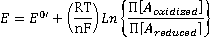
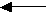
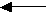
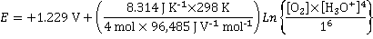
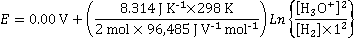

Reduction of oxygen and oxidation of hydrogen
The driving forces of life's processes are redox (oxidation-reduction) reactions involving the transfer of electrons.
 Redox (oxidation-reduction)
Redox (oxidation-reduction)
 The redox potential of water
The redox potential of water
'...there is one very important class of chemical reactions that deserves special study. These reactions are oxidation-reduction reactions...'
Linus Pauling, 1957
OIL RIG
Oxidation Is Loss of electrons, Reduction Is Gain of electrons
When molecular hydrogen (H2) is oxidized by molecular oxygen (O2) to form water (H2O), the reaction may be considered as two coupled processes; the transfer of electrons from the hydrogen to the oxygen (reduction of the oxygen) and acceptance of electrons from the hydrogen by oxygen (oxidation of the hydrogen). Oxygen is the oxidizing agent, and hydrogen is the reducing agent. Oxygen and hydrogen molecules do not have to be involved in redox reactions, but the movement of electrons between the reacting chemical species is central. Redox reactions in aqueous solutions are of the most significant importance in biological and environmental systems. They support and maintain life by gathering and dissipating energy to generate and propagate low-entropy living systems.
In oxidation-reduction (redox) reactions, the ability to donate or accept electrons is given by the redox potential, E. Here, E° is the standard (electrode, reduction or redox) potential at 25 °C, the measure of individual potential of the reversible electrode at standard state which, in this case, is 1 M and gases at a pressure of 101,325 Pa. Zero current is drawn when the potential is measured. E°' is this standard potential but at pH 7.0. At each electrode, the (electrode) potential is given by the Nernst equation,

where F = Faraday constant (96,485 J ˣ V−1 ˣ mol−1 = 96,485 C ˣ mol−1 = 96,485 A ˣ s ˣ mol−1), R is the gas constant, n = number of electrons transferred, and the Π[Aoxidized] and Π[Areduced] terms refer to all the concentration terms (multiplied) of the oxidized and reduced materials in the equation. More correctly, the activity terms should be used in place of the concentrations.
A positive redox potential indicates the ability to accept electrons (i.e., it is an oxidizing agent, oxidant), and a negative redox potential indicates the ability to donate electrons under those conditions (i.e., it is a reducing agent, reductant). The electrode potential cannot be determined independently but only as part of a cell containing two electrodes, where the overall potential is the sum of the individual electrode potentials. Within the cell, negative electrons are passed from the electrode of lower (more negative) E (cathode) to the electrode with a more positive E (anode); and these electrons are then returned via the external circuit.
Redox reactions can be redrafted as the sum of the half-reactions for the reductant oxidation and the oxidant reduction. The half-reactions are only separable in writing and may not be separable practically in time or space. The actual electrochemical reaction is the combination of the two half-reactions. The half-reactions are: (the electrons e− are from an electrode)
(1) reduction of the oxidant half-reaction
O2 + 4 H3O+ + 4 e−  6 H2O
6 H2O
¼ O2 + H3O+ + e−  1½ H2O equivalent reaction
1½ H2O equivalent reaction
easy reduction of oxygen   hard oxidation of water
 hard oxidation of water
for either equivalent reactions
E° = +1.229 V

E = +1.229 V + 0.00642 ˣ 4 ˣ Ln([H3O+]) V
E = +1.229 V + 0.0257 ˣ (-2.303 ˣ pH) V
E = +1.229 − 0.0592 ˣ pH V
therefore at pH 7 and unit activity oxygen,
E°' = +1.229 V - 0.0592 ˣ 7 V = +0.815 V.
(2) oxidation of the reductant half-reaction
2 H3O+ + 2 e−  H2 + 2H2O
H2 + 2H2O
H3O+ + e−  ½ H2 + H2O equivalent reaction
½ H2 + H2O equivalent reaction
hard reduction of hydrogen ions  easy oxidation of hydrogen
easy oxidation of hydrogen
for either equivalent reactions
E° = 0.00 V (the standard hydrogen electrode; exactly zero by definition)

At unit activity H2
E = 0.01284 ˣ 2 ˣ Ln([H3O+]) V
E = 0.0257 ˣ (-2.303 ˣ pH) V
therefore at pH 7 and unit activity hydrogen,
E°' = -0.0592 ˣ 7 V = -0.414 V.
Noting that a compound with the more positive potential will oxidize the reduced form of a substance of lower (more negative) potential., then electrons flow from negative potential to positive potential. In this example, the electrons flow from the hydrogen (E°' = -0.414 V) to the oxygen (E°' = +0.815 V).
O2 + 4 H3O++ 4 e−  6 H2O E°' = +0.815 V
6 H2O E°' = +0.815 V
2 H2 + 4 H2O  4 H3O++ 4 e− E°' = -(-0.414 V)
4 H3O++ 4 e− E°' = -(-0.414 V)
____________________________________________________________
2 H2 + O2  2 H2O E°' = +0.815 + 0.414V = 1.229 V
2 H2O E°' = +0.815 + 0.414V = 1.229 V
The redox potentials are related to the Gibbs free energy (ΔG) by:
ΔG = -nFE
where E is the net redox potential (working cell potential in volts), related to the conditions by the appropriate Nernst equation and F is the Faraday constant.
At pH = 7, under standard conditions,
ΔG°' = -nFE°'
ΔG°' = -4 ˣ 96.49 ˣ 1.229 kJ ˣ mol−1
ΔG°' = -474.3 kJ ˣ mol−1
Consider burning hydrogen gas 2 H2 + O2  2 H2O + energy (a)
2 H2O + energy (a)
where ΔG°' (the standard free energy change at pH 7.0) = -474.3 kJ ˣ mol−1. The enthalpy of this reaction (ΔH°') is -571.66 kJ ˣ mol−1 (heat is given out) and the entropy (ΔS°') is -326.8 J K−1 (fewer molecules produced, therefore more order and less entropy). ΔG°' = ΔH°' - TΔS°' = -571.66 + 0.3268 ˣ 298 = -474.3 kJ ˣ mol−1. To reverse this reaction (a) requires a large input of energy from the electrolysis process to achieve both the oxidation of water and the reduction of hydrogen ions. If heat is not supplied from the environment, the heat required for the entropy change will cool the electrolytic process.
Redox sensor
The redox potential of liquid water varies over a range of more than two volts according to the solutes it contains. This potential can be determined using an Oxidation-Reduction Potential (ORP) electrode (see right) and is a measure of the collective redox potential of everything in the water, including dissolved gases such as oxygen. The potential of the solution is determined relative to the standard potential generated by the reference electrodea, and then corrected for that potential.
The key redox half-reaction in liquid water is,
O2 + 4 H3O++ 4 e−  6 H2O E°' = +0.815 V
6 H2O E°' = +0.815 V
The redox potentials of aqueous solutions depend on both the dissolved oxygen, dissolved hydrogen, and hydrogen ion concentrations (pH). More acidic solutions favor aerobic conditions and more positive redox potential, and more alkaline solutions favor anaerobic conditions.
As the concentration of molecular oxygen increases, the redox potential increases
As the concentration of molecular oxygen decreases, the redox potential decreases
As the concentration of molecular hydrogen increases, the redox potential decreases
As the concentration of molecular hydrogen decreases, the redox potential increases
As the concentration of hydrogen ions increases (and pH decreases), the redox potential increases
As the concentration of hydrogen ions decreases (and pH increases), the redox potential decreases
A decrease of one pH unit (10 ˣ more acidic) is accompanied by an increase in the redox potential of 59 mV at 25 °C.
An increase of one pH unit (10 ˣ more alkaline) is accompanied by a decrease in the redox potential of 59 mV at 25 °C..
A decrease of dissolved molecular oxygen from 1.5 to 0.5 mg ˣ L−1 (1 ppm) is accompanied by a decrease in the redox potential of 7 mV.
An increase of dissolved molecular oxygen from 0.5 to 1.5 mg ˣ L−1 (1 ppm) is accompanied by an increase inthe redox potential of 7 mV.
A decrease of dissolved molecular hydrogen from 1.5 to 0.5 mg ˣ L−1 (1 ppm) is accompanied by an increase in the redox potential of 14 mV.
An increase of dissolved molecular hydrogen from 0.5 to 1.5 mg ˣ L−1 (1 ppm) is accompanied by a decrease in the redox potential of 14 mV.
Small changes in the hydrogen ion concentration can cover up significant changes in the hydrogen or oxygen concentrations.
Anoxic waters may have negative redox potentials.
The approximate redox potential of some solutions
| Aqueous material | Redox potential, mV | Aqueous material | Redox potential, mV |
| Electrolytic catholyte (H2, alkaline) | -600 ~ -650 | Deep well water | 0 |
| Water associated with oil deposits | -500 | Degassed pure water | +200 |
| Organic-rich saline | -400 | Distilled water | +250 |
| Euxinic water (H2S) | -250 | Groundwater | +250 |
| Healthy human cells | -170 ~ -290 | Mineral water | +200 ~ +400 |
| Anaerobic yeast fermentation | -180 | Tap water | +220 ~ +380 |
| Anaerobic water-logged soil | -100 | Surface seawater | ≈ +400 |
| Green tea | -100 | Deep seawater (≈ 2000 m) | ≈ +430 |
| Vegetable juice | -70 | Swimming pool | +400 ~ +475 |
| Mother's milk | -70 | Rainwater | +600 |
| Human internal environment | -70 | Electrolytic anolyte (O2, acidic) | +600 |
The surface of water possesses redox properties, as shown by the reduction of organic compounds in pure water microdroplets (1 to 50 μm diameter) without using reducing agents, catalysts, or applying external charges [3653].
[Back to Top  ]
]
a The electrode reaction for the Ag/AgCl/saturated KCl reference electrode is
AgCl + e−  Ag0 + Cl− E = +0.197 V (in saturated KCl)
Ag0 + Cl− E = +0.197 V (in saturated KCl)
The potential is relative to the Standard Hydrogen Electrode (SHE)
2 H+ + 2 e−  H2 E0 = 0 V at all temperatures
H2 E0 = 0 V at all temperatures
where the electrode is platinum foil covered in platinum black (finely divided platinum). The H+ is at unit activity (≈ 1 m HCl), and the gas pressure is at 1 atm (101.325 kPa) H2 through a bubbler. For practical purposes, if a hydrogen electrode is needed, the Normal Hydrogen Electrode (NHE) is used; where the potential is calculated from the acid strength used and the ambient pressure [3380]. The potential of the Standard Hydrogen Electrode is -4.56 eV relative to a vacuum.
[Back]
Home | Site Index | Thermodynamics, introduction | Magnetic descaling devices | LSBU | Top
This page was established in 2015 and last updated by Martin Chaplin on 5 November, 2021